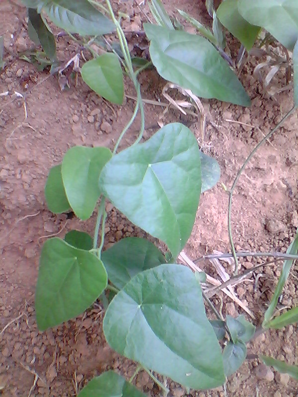

Latthe Education Society's Acharya Deshabhushan Ayurvedic Medical College And Hospital Bedkihal-Shamanewadi, 591214
Department of Dravyaguna Vigyana

Basonym of Drug
Patha
Main Synonym
Patha
Ambasthaki
Prachina
Papachelika
Rasa
Pathika
Varatiktaka
Regional Name
Bengali: Nimuka
Gujarati: Venivel, Karedhiyu
Hindi: Patha, Purain Padhi
Tamil: Appata, Pomutute
Telugu: Pata, Viruboddi
Botanical Name
Cissampelos pariera Linn
Family
Menispermaceae
External Morphology
A climbing shrub
Useful Parts
Root
Important Phytoconstituent
Fangchinoline
Hayatinin
Cyclerine
Cycleanorine
Perpamine
Isotetradrine
Magnoflorine
Burmannaline
Rasa Panchak
Rasa: Tikta
Guna: Tikshna
Virya: Ushna
Vipaka: Katu
Action
Kaphavatahara
Therapeutic Indication
Vishaghna (Anti-poisonous)
Grahi (Reduce excessive discharge)
Balya (Strengthening)
Atisarahara (Anti-diarrheal)
Therapeutic Uses
Ardhavbhedaka:
Root juice of Patha is used as nasya in headache.
Lavanameha:
Decoction of Patha and Aguru is useful in urine disorders.
Arsha:
Patha powder with buttermilk is beneficial for hemorrhoids.
Dose
Powder - 1-3 gm
Decoction - 50-100 ml
Formulations
Pushyanuga Churna
Saddharana Yoga
Adverse Effect
Not Known
Remedial Measure
Not required
Purification
Not required